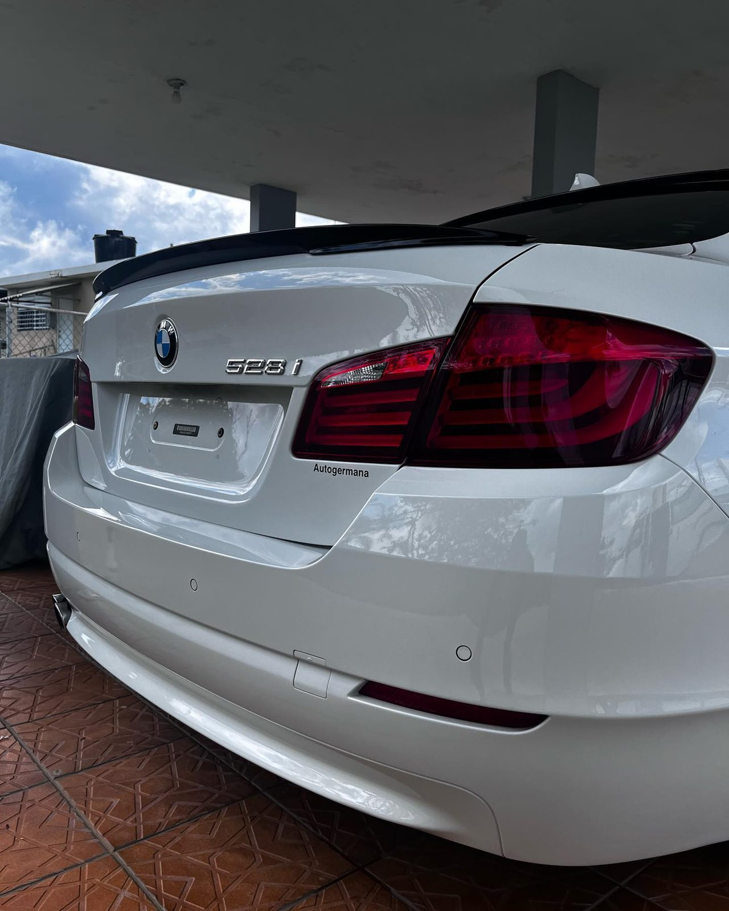
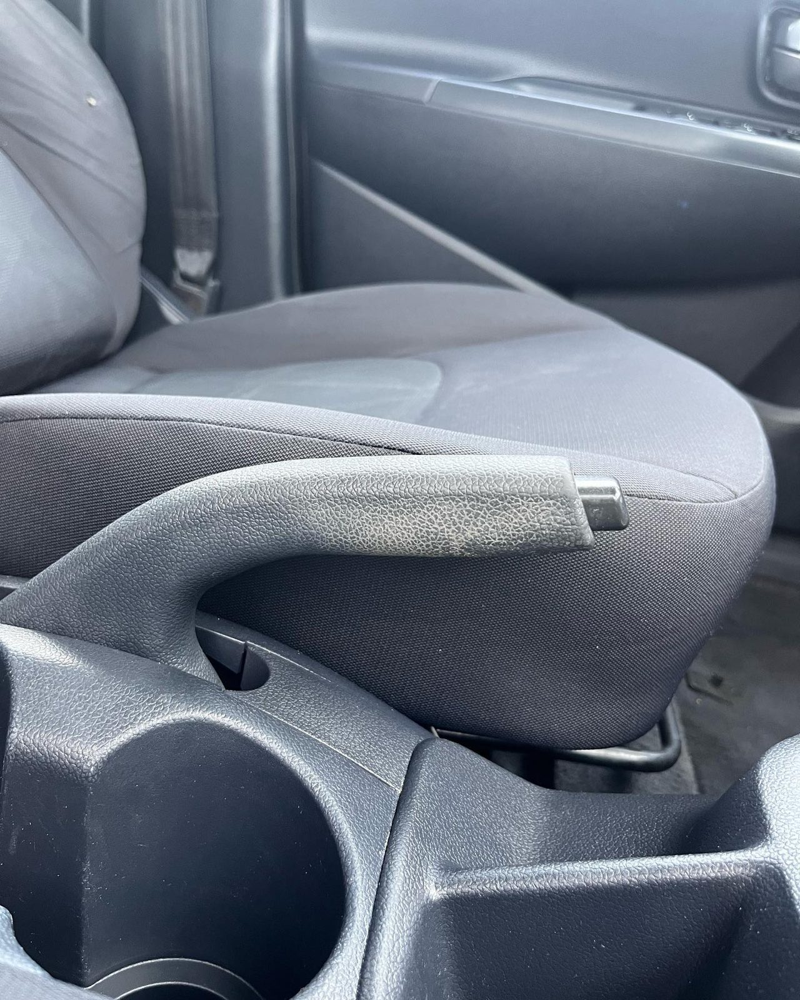
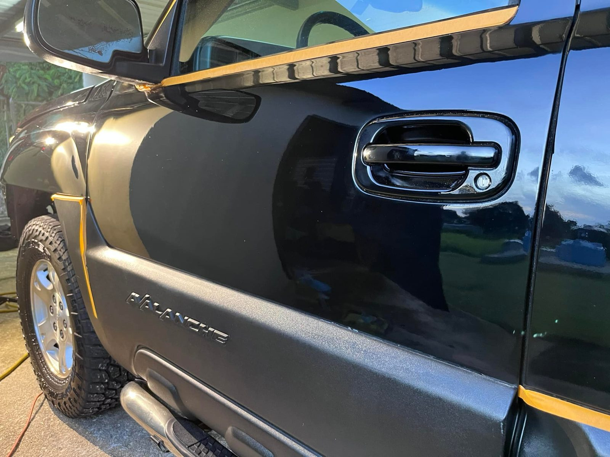
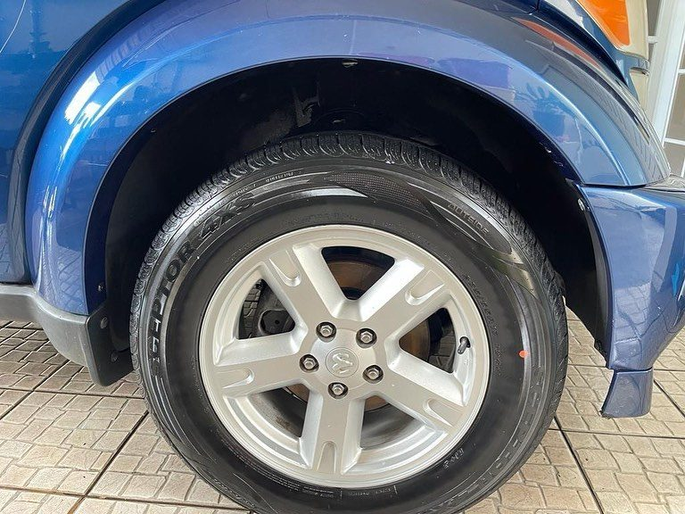
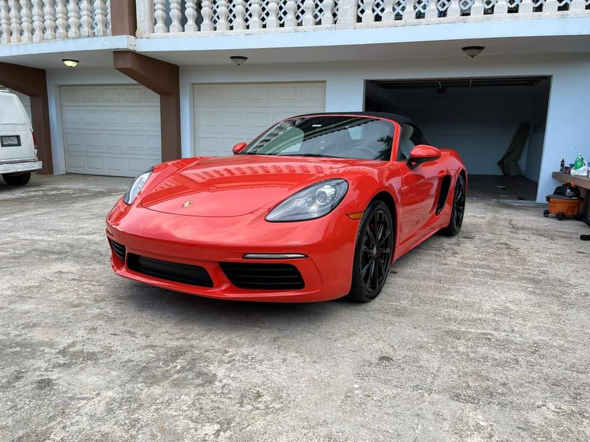
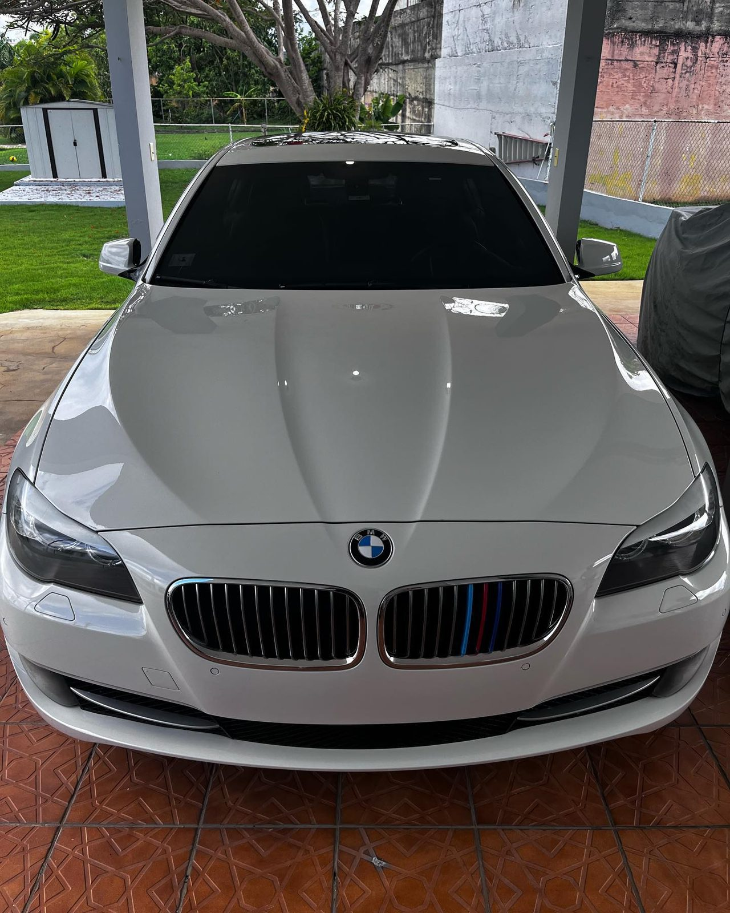
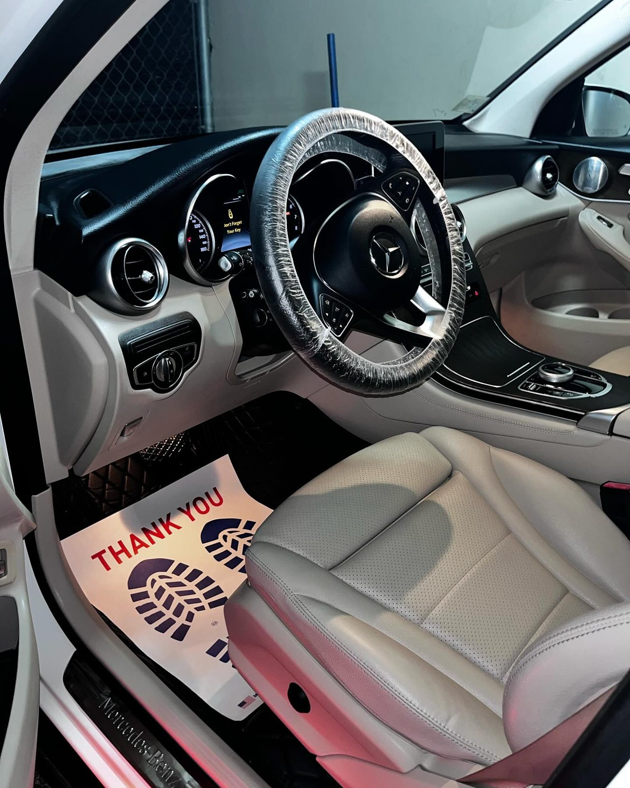
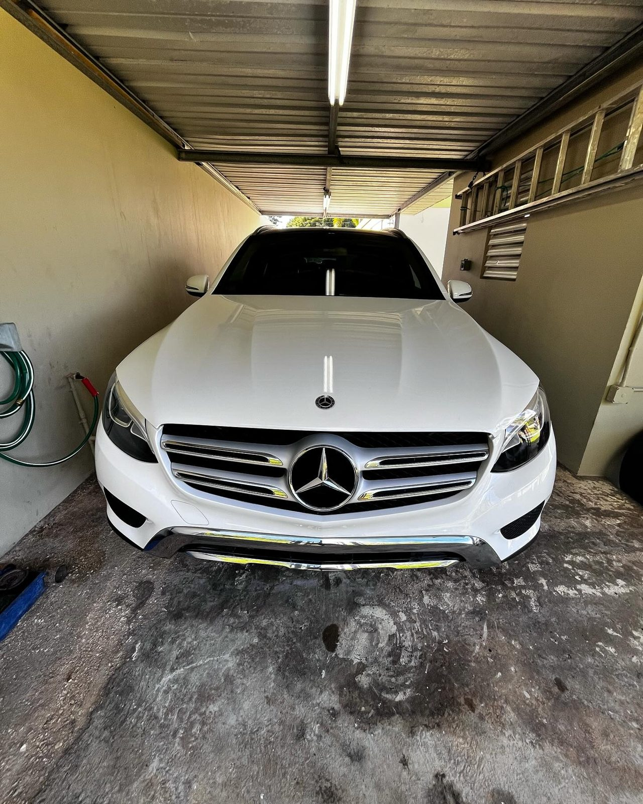

Resultados reales
Trabajos
Cada foto es un trabajo real del negocio. Toca las flechas o desliza para ver más.







Camuy, Puerto Rico · Servicio a domicilio en el área norte
Lavado detallado para todo tipo de auto, con servicio a domicilio en el área norte. Shampoo, brillos, cerámica y pulidos, con fotos reales de cada trabajo.

Resultados reales
Cada foto es un trabajo real del negocio. Toca las flechas o desliza para ver más.




Servicios
Cada servicio va con una foto real del trabajo.

Lavado completo y detallado para todo tipo de auto, por dentro y por fuera.

Limpieza profunda de asientos y superficies interiores, con shampoo donde hace falta.

Acabado con brillo en carrocería, aros y detalles exteriores.

Protección cerámica para una pintura con brillo profundo y duradero.

Pulido para devolverle vida y reflejo a la pintura.

Quiénes somos
Electrux Car Wash and Detailing en Camuy se dedica al lavado detallado para todo tipo de auto, con servicio a domicilio en el área norte. Shampoo, brillos, cerámica y pulidos: cada trabajo queda documentado con fotos reales.
Proceso
Así trabaja Electrux, sin vueltas.
Cuéntanos de tu vehículo y coordinamos tu cita.
Lavamos y detallamos con calma, por dentro y por fuera.
Recibes tu auto limpio, con brillo y listo para la calle.
Preguntas frecuentes
Sí, ofrecemos servicio a domicilio en el área norte. Escríbenos por WhatsApp y coordinamos tu cita.
Un lavado a fondo por dentro y por fuera, con atención a los detalles que hacen la diferencia: interior, carrocería y acabados.
Sí, el shampoo interior es uno de nuestros servicios, para asientos y superficies que necesitan una limpieza profunda.
Sí, trabajamos protección cerámica y pulidos para devolverle brillo y profundidad a la pintura.
Por WhatsApp al 787-247-7329. Escríbenos, cuéntanos de tu vehículo y coordinamos.
Agenda tu cita
Teléfono / WhatsApp
+1 787-247-7329Ubicación
Camuy, Puerto Rico
Llena esto y te abrimos WhatsApp con tu mensaje listo.
Esta página la creó ManuPro. Escríbenos hoy mismo y cotiza la website profesional de tu negocio.
Cotizar por WhatsApp